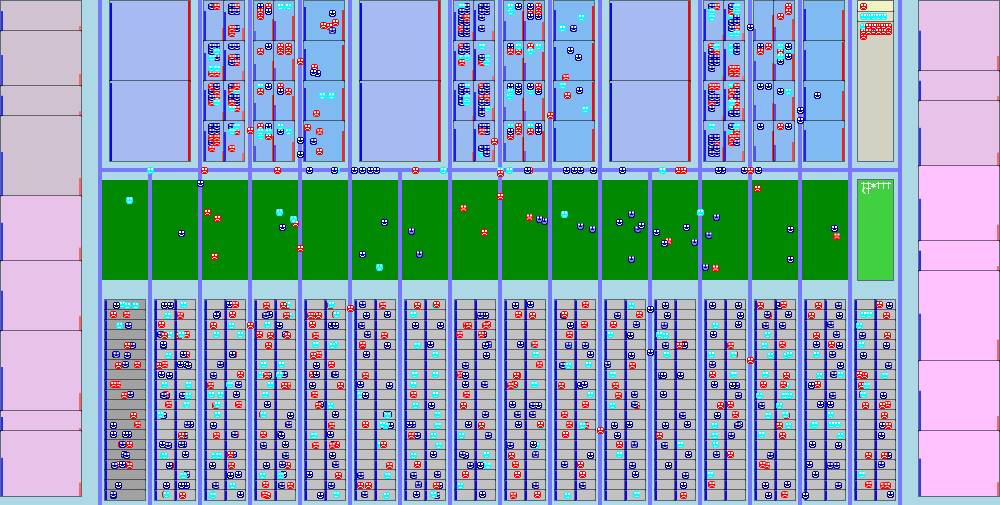

Animated Covid Model/Game
Rooms
Rooms are where infections occur. Room environments affect infection rates. The blue bars on the left show ventilation (higher is worse), red bars on the right show speaking loudness.
People move into rooms depending on the time of day (and day of week).
People's motion inside rooms depend on the type of room and (for some rooms) on the time.
- Weekday
- Schools
- Offices
- Meat packing
- Dwellings
Dwellings are where people sleep.
- Houses
Some people in houses stay home during weekdays. There are also occasional house parties.
- Bunkhouses
Bunkhouses have more residents, which increases infection risk.
- Other
These are the places people go on evenings and weekends.
- Houses of worship
- Restaurants
- Bars
- Clubs
- Parks
It is possible to get infected in parks, but the ventilation is very good.
- Cemetary
- Hospital
There is no infection transmission in the hospital.
- Intensive care
- Hospital ward
- Hospital hallway
